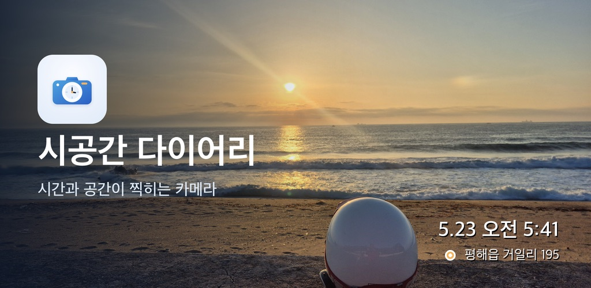

시공간 다이어리 · Spacetime Diary
타임스탬프와 GPS 좌표가 사진 위에 함께 찍히고, 그 사진들이 지도 위 스탬프로 모입니다. 전국 어디서나 쓰는 기본판이고, 촬영과 열람은 네트워크 없이도 됩니다.
Google Play 에서 받기 · Get it on Google Play낭만라이더 · Romantic Rider
사진을 찍는 순간, 촬영 시각과 GPS 좌표가 사진에 그대로 새겨집니다.
새겨진 사진은 지도 위 스탬프로 쌓여, 언제 어디에 있었는지가 한 장의 지도로 남습니다.
안드로이드용 카메라 · 지도 앱이며, 만든 곳은 1인 개발 스튜디오 낭만라이더입니다.
The moment you shoot, the time and GPS coordinates are stamped onto the photo
itself. Stamped photos pile up as pins on a map, turning where you have been into a diary you
can see — an Android camera & map app by Romantic Rider, a one-person studio.
기록은 기본적으로 내 기기에 저장됩니다. 다른 사람과 사진을 나누는 공유
기능은 원할 때만, 선택 로그인으로 사용합니다.
Your records stay on your device by default. Sharing photos with others is
opt-in — only then does it use an optional sign-in.

타임스탬프와 GPS 좌표가 사진 위에 함께 찍히고, 그 사진들이 지도 위 스탬프로 모입니다. 전국 어디서나 쓰는 기본판이고, 촬영과 열람은 네트워크 없이도 됩니다.
Google Play 에서 받기 · Get it on Google Play경남 남해군을 여행할 때 쓰는 지역 특화판입니다. 관광 정보를 지도에서 함께 보고, 장소마다 남긴 사진을 다른 여행자와 나눌 수 있습니다.
Google Play 에서 받기 · Get it on Google Play